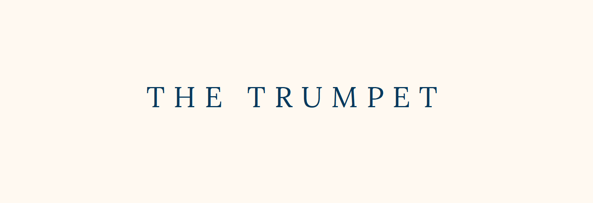

The trumpet
Branding, User Interface, Web Typography
Branding, User Interface, Web Typography
The Trumpet is an online magazine which recalls the fashion paper world but also makes your user able to buy everything he/she sees online in few seconds. You will focus on the typographic choices for your logo and pages design and show the creative path that took you to the final version. You’ll need to explain clearly why you choose to design the pages depending on the different contents of the magazine.
Typography driven e-commerce.
Elisa Ardeni
Digital Typography, Visual designer, User Interface Design
Individual
2017 - 2018
What makes a logo feel luxurious ? This was the question that we needed to answer while designing a typographic logo for TheTrumpet. Small caps and heavy tracking was my take on designing this logo.
I decided to study the trumpet as a musical intrument itself, studying sound waves and key movement to find shapes and color palette.